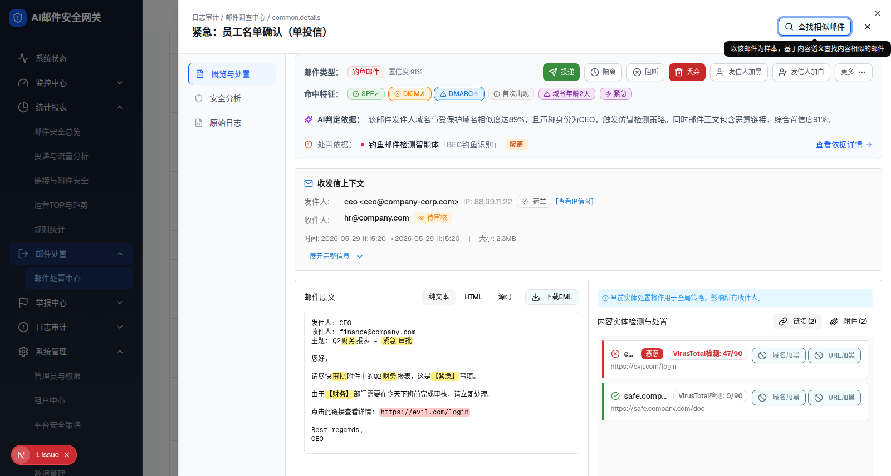

<!DOCTYPE html>
<html lang="zh-CN">
<head>
<meta charset="UTF-8">
<meta name="viewport" content="width=device-width, initial-scale=1.0">
<title>层级10：详情抽屉 · 概览与处置（单收件人） - 邮件处置中心 HTML 规格说明</title>
<link rel="stylesheet" href="../assets/demo-app.css">
<link rel="stylesheet" href="../assets/spec-style.css">
<style>
  .component-preview { background:#fff; }
  .component-preview .spec-popover { position:absolute; z-index:50; }
  .spec-select-menu { position:absolute; }
  .pass { color:#15803d; font-weight:600; }
  .bad { color:#b91c1c; font-weight:600; }
  .warn { color:#a16207; font-weight:600; }
  .tag-base { display:inline-block; padding:.05rem .375rem; border-radius:.25rem; font-size:.6875rem; font-weight:600; background:#dbeafe; color:#1d4ed8; }
  .tag-overlay { background:#fef3c7; color:#92400e; }
  .tag-gap { background:#fee2e2; color:#b91c1c; }
  .stage-1 { color:#3b82f6; } .stage-2 { color:#06b6d4; } .stage-3 { color:#f59e0b; } .stage-4 { color:#f43f5e; } .stage-5 { color:#10b981; }
</style>
</head>
<body>
<nav class="layer-nav"><a href="./index.html#component-2-4">← 返回主文件</a><a href="./layer-9-similar-mode.html">上一层：找相似样本态</a><a href="./layer-11-detail-recipient-matrix.html">下一层：收件人矩阵 →</a></nav>
<header class="spec-header">
  <h1>交互层级 10（详情层级1）：模块一 概览与处置（单收件人）</h1>
  <table class="meta-table">
    <tr><td>所属组件</td><td>2.4 详情抽屉 → <code>OverviewActionSection</code>（<code>overview-action-section.tsx</code>，1447 行）</td></tr>
    <tr><td>主文件</td><td><a href="./index.html#component-2-4">index.html#component-2-4</a></td></tr>
    <tr><td>触发路径</td><td>表格行「查看」（本例：MIC002，单收件人 hr@company.com，待审核）</td></tr>
  </table>
</header>
<section>
  <h2>预览与截图</h2>
  <div class="preview-hint">可切换邮件原文（纯文本/HTML/源码）、切换链接/附件 Tab、展开完整信息、打开「更多」菜单、打开加黑/加白/投递确认弹窗</div>
  <div class="component-preview" data-preview="detail">
    <div id="section-overview" class="border-b border-gray-200"><div class="bg-white dark:bg-gray-800"><div class="p-4 border rounded-md mx-4 mt-4 bg-gray-50 border-gray-200"><div class="flex items-center justify-between gap-4 flex-wrap"><div class="flex items-center gap-2"><span class="text-sm font-semibold text-gray-600">邮件类型：</span><span data-slot="badge" class="inline-flex items-center justify-center rounded-md px-2 py-0.5 text-xs font-medium w-fit whitespace-nowrap shrink-0 [&amp;&gt;svg]:size-3 [&amp;&gt;svg]:pointer-events-none focus-visible:border-ring focus-visible:ring-ring/50 focus-visible:ring-[3px] aria-invalid:ring-destructive/20 dark:aria-invalid:ring-destructive/40 aria-invalid:border-destructive transition-[color,box-shadow] overflow-hidden [a&amp;]:hover:bg-accent [a&amp;]:hover:text-accent-foreground gap-1 border bg-red-50 text-red-700 border-red-200">钓鱼邮件</span><span class="text-xs text-gray-500">置信度 91%</span></div><div class="flex items-center gap-2 flex-wrap"><button data-slot="tooltip-trigger" class="inline-flex items-center justify-center whitespace-nowrap font-medium transition-all disabled:pointer-events-none disabled:opacity-50 [&amp;_svg]:pointer-events-none [&amp;_svg:not([class*='size-'])]:size-4 shrink-0 [&amp;_svg]:shrink-0 outline-none focus-visible:border-ring focus-visible:ring-ring/50 focus-visible:ring-[3px] aria-invalid:ring-destructive/20 dark:aria-invalid:ring-destructive/40 aria-invalid:border-destructive rounded-md px-3 has-[&gt;svg]:px-2.5 gap-1.5 text-xs h-8 bg-[#388E3C] hover:bg-[#2E7D32] text-white" data-state="closed"><svg xmlns="http://www.w3.org/2000/svg" width="24" height="24" viewBox="0 0 24 24" fill="none" stroke="currentColor" stroke-width="2" stroke-linecap="round" stroke-linejoin="round" class="lucide lucide-send w-3.5 h-3.5"><path d="M14.536 21.686a.5.5 0 0 0 .937-.024l6.5-19a.496.496 0 0 0-.635-.635l-19 6.5a.5.5 0 0 0-.024.937l7.93 3.18a2 2 0 0 1 1.112 1.11z"></path><path d="m21.854 2.147-10.94 10.939"></path></svg>投递</button><button data-slot="tooltip-trigger" class="inline-flex items-center justify-center whitespace-nowrap font-medium transition-all disabled:pointer-events-none disabled:opacity-50 [&amp;_svg]:pointer-events-none [&amp;_svg:not([class*='size-'])]:size-4 shrink-0 [&amp;_svg]:shrink-0 outline-none focus-visible:border-ring focus-visible:ring-ring/50 focus-visible:ring-[3px] aria-invalid:ring-destructive/20 dark:aria-invalid:ring-destructive/40 aria-invalid:border-destructive border shadow-xs dark:bg-input/30 dark:border-input dark:hover:bg-input/50 rounded-md px-3 has-[&gt;svg]:px-2.5 gap-1.5 text-xs h-8 hover:bg-[#ECEFF1] border-gray-300 text-gray-600 hover:border-blue-500 hover:text-blue-600 bg-white" data-state="closed"><svg xmlns="http://www.w3.org/2000/svg" width="24" height="24" viewBox="0 0 24 24" fill="none" stroke="currentColor" stroke-width="2" stroke-linecap="round" stroke-linejoin="round" class="lucide lucide-clock w-3.5 h-3.5"><circle cx="12" cy="12" r="10"></circle><polyline points="12 6 12 12 16 14"></polyline></svg>隔离</button><button data-slot="tooltip-trigger" class="inline-flex items-center justify-center whitespace-nowrap font-medium transition-all disabled:pointer-events-none disabled:opacity-50 [&amp;_svg]:pointer-events-none [&amp;_svg:not([class*='size-'])]:size-4 shrink-0 [&amp;_svg]:shrink-0 outline-none focus-visible:border-ring focus-visible:ring-ring/50 focus-visible:ring-[3px] aria-invalid:ring-destructive/20 dark:aria-invalid:ring-destructive/40 aria-invalid:border-destructive border shadow-xs dark:bg-input/30 dark:border-input dark:hover:bg-input/50 rounded-md px-3 has-[&gt;svg]:px-2.5 gap-1.5 text-xs h-8 hover:bg-[#FFF3E0] border-gray-300 text-gray-600 hover:border-blue-500 hover:text-blue-600 bg-white" data-state="closed"><svg xmlns="http://www.w3.org/2000/svg" width="24" height="24" viewBox="0 0 24 24" fill="none" stroke="currentColor" stroke-width="2" stroke-linecap="round" stroke-linejoin="round" class="lucide lucide-circle-x w-3.5 h-3.5"><circle cx="12" cy="12" r="10"></circle><path d="m15 9-6 6"></path><path d="m9 9 6 6"></path></svg>阻断</button><button data-slot="tooltip-trigger" class="inline-flex items-center justify-center whitespace-nowrap font-medium transition-all disabled:pointer-events-none disabled:opacity-50 [&amp;_svg]:pointer-events-none [&amp;_svg:not([class*='size-'])]:size-4 shrink-0 [&amp;_svg]:shrink-0 outline-none focus-visible:border-ring focus-visible:ring-ring/50 focus-visible:ring-[3px] aria-invalid:ring-destructive/20 dark:aria-invalid:ring-destructive/40 aria-invalid:border-destructive rounded-md px-3 has-[&gt;svg]:px-2.5 gap-1.5 text-xs h-8 bg-[#C62828] hover:bg-[#B71C1C] text-white" data-state="closed"><svg xmlns="http://www.w3.org/2000/svg" width="24" height="24" viewBox="0 0 24 24" fill="none" stroke="currentColor" stroke-width="2" stroke-linecap="round" stroke-linejoin="round" class="lucide lucide-trash2 w-3.5 h-3.5"><path d="M3 6h18"></path><path d="M19 6v14c0 1-1 2-2 2H7c-1 0-2-1-2-2V6"></path><path d="M8 6V4c0-1 1-2 2-2h4c1 0 2 1 2 2v2"></path><line x1="10" x2="10" y1="11" y2="17"></line><line x1="14" x2="14" y1="11" y2="17"></line></svg>丢弃</button><button data-slot="tooltip-trigger" class="inline-flex items-center justify-center whitespace-nowrap font-medium transition-all disabled:pointer-events-none disabled:opacity-50 [&amp;_svg]:pointer-events-none [&amp;_svg:not([class*='size-'])]:size-4 shrink-0 [&amp;_svg]:shrink-0 outline-none focus-visible:border-ring focus-visible:ring-ring/50 focus-visible:ring-[3px] aria-invalid:ring-destructive/20 dark:aria-invalid:ring-destructive/40 aria-invalid:border-destructive border shadow-xs hover:bg-accent dark:bg-input/30 dark:border-input dark:hover:bg-input/50 rounded-md px-3 has-[&gt;svg]:px-2.5 gap-1.5 text-xs h-8 border-gray-300 text-gray-600 hover:border-blue-500 hover:text-blue-600 bg-white" data-state="closed"><svg xmlns="http://www.w3.org/2000/svg" width="24" height="24" viewBox="0 0 24 24" fill="none" stroke="currentColor" stroke-width="2" stroke-linecap="round" stroke-linejoin="round" class="lucide lucide-user-minus w-3.5 h-3.5"><path d="M16 21v-2a4 4 0 0 0-4-4H6a4 4 0 0 0-4 4v2"></path><circle cx="9" cy="7" r="4"></circle><line x1="22" x2="16" y1="11" y2="11"></line></svg>发信人加黑</button><button data-slot="tooltip-trigger" class="inline-flex items-center justify-center whitespace-nowrap font-medium transition-all disabled:pointer-events-none disabled:opacity-50 [&amp;_svg]:pointer-events-none [&amp;_svg:not([class*='size-'])]:size-4 shrink-0 [&amp;_svg]:shrink-0 outline-none focus-visible:border-ring focus-visible:ring-ring/50 focus-visible:ring-[3px] aria-invalid:ring-destructive/20 dark:aria-invalid:ring-destructive/40 aria-invalid:border-destructive border shadow-xs hover:bg-accent dark:bg-input/30 dark:border-input dark:hover:bg-input/50 rounded-md px-3 has-[&gt;svg]:px-2.5 gap-1.5 text-xs h-8 border-gray-300 text-gray-600 hover:border-blue-500 hover:text-blue-600 bg-white" data-state="closed"><svg xmlns="http://www.w3.org/2000/svg" width="24" height="24" viewBox="0 0 24 24" fill="none" stroke="currentColor" stroke-width="2" stroke-linecap="round" stroke-linejoin="round" class="lucide lucide-user-plus w-3.5 h-3.5"><path d="M16 21v-2a4 4 0 0 0-4-4H6a4 4 0 0 0-4 4v2"></path><circle cx="9" cy="7" r="4"></circle><line x1="19" x2="19" y1="8" y2="14"></line><line x1="22" x2="16" y1="11" y2="11"></line></svg>发信人加白</button><button data-slot="tooltip-trigger" class="inline-flex items-center justify-center whitespace-nowrap font-medium transition-all disabled:pointer-events-none disabled:opacity-50 [&amp;_svg]:pointer-events-none [&amp;_svg:not([class*='size-'])]:size-4 shrink-0 [&amp;_svg]:shrink-0 outline-none focus-visible:border-ring focus-visible:ring-ring/50 focus-visible:ring-[3px] aria-invalid:ring-destructive/20 dark:aria-invalid:ring-destructive/40 aria-invalid:border-destructive border shadow-xs hover:bg-accent hover:text-accent-foreground dark:bg-input/30 dark:border-input dark:hover:bg-input/50 rounded-md px-3 has-[&gt;svg]:px-2.5 gap-1.5 text-xs h-8 border-gray-300 text-gray-600 bg-white" type="button" id="radix-_r_61_" aria-haspopup="menu" aria-expanded="false" data-state="closed">更多<svg xmlns="http://www.w3.org/2000/svg" width="24" height="24" viewBox="0 0 24 24" fill="none" stroke="currentColor" stroke-width="2" stroke-linecap="round" stroke-linejoin="round" class="lucide lucide-ellipsis w-3.5 h-3.5"><circle cx="12" cy="12" r="1"></circle><circle cx="19" cy="12" r="1"></circle><circle cx="5" cy="12" r="1"></circle></svg></button></div></div><div class="flex items-center gap-2 mt-3 flex-wrap"><span class="text-sm font-semibold text-gray-600">命中特征：</span><span data-slot="tooltip-trigger" class="inline-flex items-center justify-center rounded-md px-2 py-0.5 text-xs font-medium w-fit whitespace-nowrap shrink-0 [&amp;&gt;svg]:size-3 [&amp;&gt;svg]:pointer-events-none focus-visible:border-ring focus-visible:ring-ring/50 focus-visible:ring-[3px] aria-invalid:ring-destructive/20 dark:aria-invalid:ring-destructive/40 aria-invalid:border-destructive transition-[color,box-shadow] overflow-hidden [a&amp;]:hover:bg-accent [a&amp;]:hover:text-accent-foreground gap-1 cursor-help border bg-[#E8F5E9] text-[#388E3C] border-[#A5D6A7]" data-state="closed"><svg xmlns="http://www.w3.org/2000/svg" width="24" height="24" viewBox="0 0 24 24" fill="none" stroke="currentColor" stroke-width="2" stroke-linecap="round" stroke-linejoin="round" class="lucide lucide-circle-check-big w-3 h-3"><path d="M21.801 10A10 10 0 1 1 17 3.335"></path><path d="m9 11 3 3L22 4"></path></svg>SPF✓</span><span data-slot="tooltip-trigger" class="inline-flex items-center justify-center rounded-md px-2 py-0.5 text-xs font-medium w-fit whitespace-nowrap shrink-0 [&amp;&gt;svg]:size-3 [&amp;&gt;svg]:pointer-events-none focus-visible:border-ring focus-visible:ring-ring/50 focus-visible:ring-[3px] aria-invalid:ring-destructive/20 dark:aria-invalid:ring-destructive/40 aria-invalid:border-destructive transition-[color,box-shadow] overflow-hidden [a&amp;]:hover:bg-accent [a&amp;]:hover:text-accent-foreground gap-1 cursor-help border bg-[#FFF3E0] text-[#F57C00] border-[#FFCC80] ring-1 ring-offset-1" data-state="closed"><svg xmlns="http://www.w3.org/2000/svg" width="24" height="24" viewBox="0 0 24 24" fill="none" stroke="currentColor" stroke-width="2" stroke-linecap="round" stroke-linejoin="round" class="lucide lucide-circle-x w-3 h-3"><circle cx="12" cy="12" r="10"></circle><path d="m15 9-6 6"></path><path d="m9 9 6 6"></path></svg>DKIM✗</span><span data-slot="tooltip-trigger" class="inline-flex items-center justify-center rounded-md px-2 py-0.5 text-xs font-medium w-fit whitespace-nowrap shrink-0 [&amp;&gt;svg]:size-3 [&amp;&gt;svg]:pointer-events-none focus-visible:border-ring focus-visible:ring-ring/50 focus-visible:ring-[3px] aria-invalid:ring-destructive/20 dark:aria-invalid:ring-destructive/40 aria-invalid:border-destructive transition-[color,box-shadow] overflow-hidden [a&amp;]:hover:bg-accent [a&amp;]:hover:text-accent-foreground gap-1 cursor-help border bg-[#E3F2FD] text-[#1976D2] border-[#90CAF9] ring-1 ring-offset-1" data-state="closed"><svg xmlns="http://www.w3.org/2000/svg" width="24" height="24" viewBox="0 0 24 24" fill="none" stroke="currentColor" stroke-width="2" stroke-linecap="round" stroke-linejoin="round" class="lucide lucide-triangle-alert w-3 h-3"><path d="m21.73 18-8-14a2 2 0 0 0-3.48 0l-8 14A2 2 0 0 0 4 21h16a2 2 0 0 0 1.73-3"></path><path d="M12 9v4"></path><path d="M12 17h.01"></path></svg>DMARC⚠</span><span data-slot="tooltip-trigger" class="inline-flex items-center justify-center rounded-md border px-2 py-0.5 text-xs font-medium w-fit whitespace-nowrap shrink-0 [&amp;&gt;svg]:size-3 [&amp;&gt;svg]:pointer-events-none focus-visible:border-ring focus-visible:ring-ring/50 focus-visible:ring-[3px] aria-invalid:ring-destructive/20 dark:aria-invalid:ring-destructive/40 aria-invalid:border-destructive transition-[color,box-shadow] overflow-hidden [a&amp;]:hover:bg-accent [a&amp;]:hover:text-accent-foreground bg-[#F5F5F5] text-[#616161] border-[#E0E0E0] gap-1 cursor-help" data-state="closed"><svg xmlns="http://www.w3.org/2000/svg" width="24" height="24" viewBox="0 0 24 24" fill="none" stroke="currentColor" stroke-width="2" stroke-linecap="round" stroke-linejoin="round" class="lucide lucide-info w-3 h-3"><circle cx="12" cy="12" r="10"></circle><path d="M12 16v-4"></path><path d="M12 8h.01"></path></svg>首次出现</span><span data-slot="tooltip-trigger" class="inline-flex items-center justify-center rounded-md border px-2 py-0.5 text-xs font-medium w-fit whitespace-nowrap shrink-0 [&amp;&gt;svg]:size-3 [&amp;&gt;svg]:pointer-events-none focus-visible:border-ring focus-visible:ring-ring/50 focus-visible:ring-[3px] aria-invalid:ring-destructive/20 dark:aria-invalid:ring-destructive/40 aria-invalid:border-destructive transition-[color,box-shadow] overflow-hidden [a&amp;]:hover:bg-accent [a&amp;]:hover:text-accent-foreground bg-[#F3E5F5] text-[#7B1FA2] border-[#CE93D8] gap-1 cursor-help" data-state="closed"><svg xmlns="http://www.w3.org/2000/svg" width="24" height="24" viewBox="0 0 24 24" fill="none" stroke="currentColor" stroke-width="2" stroke-linecap="round" stroke-linejoin="round" class="lucide lucide-triangle-alert w-3 h-3"><path d="m21.73 18-8-14a2 2 0 0 0-3.48 0l-8 14A2 2 0 0 0 4 21h16a2 2 0 0 0 1.73-3"></path><path d="M12 9v4"></path><path d="M12 17h.01"></path></svg>域名年龄2天</span><span data-slot="tooltip-trigger" class="inline-flex items-center justify-center rounded-md border px-2 py-0.5 text-xs font-medium w-fit whitespace-nowrap shrink-0 [&amp;&gt;svg]:size-3 [&amp;&gt;svg]:pointer-events-none focus-visible:border-ring focus-visible:ring-ring/50 focus-visible:ring-[3px] aria-invalid:ring-destructive/20 dark:aria-invalid:ring-destructive/40 aria-invalid:border-destructive transition-[color,box-shadow] overflow-hidden [a&amp;]:hover:bg-accent [a&amp;]:hover:text-accent-foreground bg-[#F3E5F5] text-[#7B1FA2] border-[#CE93D8] gap-1 cursor-help" data-state="closed"><svg xmlns="http://www.w3.org/2000/svg" width="24" height="24" viewBox="0 0 24 24" fill="none" stroke="currentColor" stroke-width="2" stroke-linecap="round" stroke-linejoin="round" class="lucide lucide-zap w-3 h-3"><path d="M4 14a1 1 0 0 1-.78-1.63l9.9-10.2a.5.5 0 0 1 .86.46l-1.92 6.02A1 1 0 0 0 13 10h7a1 1 0 0 1 .78 1.63l-9.9 10.2a.5.5 0 0 1-.86-.46l1.92-6.02A1 1 0 0 0 11 14z"></path></svg>紧急</span></div><div class="border-t border-gray-100 my-3"></div><div class="flex items-start gap-2"><div class="flex items-center gap-2 flex-shrink-0"><svg xmlns="http://www.w3.org/2000/svg" width="24" height="24" viewBox="0 0 24 24" fill="none" stroke="currentColor" stroke-width="2" stroke-linecap="round" stroke-linejoin="round" class="lucide lucide-sparkles w-4 h-4 text-purple-600"><path d="M9.937 15.5A2 2 0 0 0 8.5 14.063l-6.135-1.582a.5.5 0 0 1 0-.962L8.5 9.936A2 2 0 0 0 9.937 8.5l1.582-6.135a.5.5 0 0 1 .963 0L14.063 8.5A2 2 0 0 0 15.5 9.937l6.135 1.581a.5.5 0 0 1 0 .964L15.5 14.063a2 2 0 0 0-1.437 1.437l-1.582 6.135a.5.5 0 0 1-.963 0z"></path><path d="M20 3v4"></path><path d="M22 5h-4"></path><path d="M4 17v2"></path><path d="M5 18H3"></path></svg><span class="text-sm font-semibold text-gray-700">AI判定依据：</span></div><p class="text-sm text-gray-600 flex-1">该邮件发件人域名与受保护域名相似度达89%，且声称身份为CEO，触发仿冒检测策略。同时邮件正文包含恶意链接，综合置信度91%。</p></div><div class="border-t border-gray-100 my-3"></div><div class="flex items-center gap-2 flex-wrap text-sm"><svg xmlns="http://www.w3.org/2000/svg" width="24" height="24" viewBox="0 0 24 24" fill="none" stroke="currentColor" stroke-width="2" stroke-linecap="round" stroke-linejoin="round" class="lucide lucide-shield-alert w-4 h-4 text-orange-600 shrink-0"><path d="M20 13c0 5-3.5 7.5-7.66 8.95a1 1 0 0 1-.67-.01C7.5 20.5 4 18 4 13V6a1 1 0 0 1 1-1c2 0 4.5-1.2 6.24-2.72a1.17 1.17 0 0 1 1.52 0C14.51 3.81 17 5 19 5a1 1 0 0 1 1 1z"></path><path d="M12 8v4"></path><path d="M12 16h.01"></path></svg><span class="text-gray-500 shrink-0">处置依据：</span><span class="w-1.5 h-1.5 rounded-full shrink-0 bg-rose-500"></span><span class="font-medium text-gray-900">钓鱼邮件检测智能体<span class="text-gray-500 font-normal">「BEC钓鱼识别」</span></span><span class="text-xs font-medium px-2 py-0.5 rounded bg-orange-100 text-orange-700">隔离</span><button class="group flex items-center gap-1 text-blue-600 hover:text-blue-700 hover:underline ml-auto shrink-0">查看依据详情<svg xmlns="http://www.w3.org/2000/svg" width="24" height="24" viewBox="0 0 24 24" fill="none" stroke="currentColor" stroke-width="2" stroke-linecap="round" stroke-linejoin="round" class="lucide lucide-arrow-right w-3.5 h-3.5 opacity-70 group-hover:opacity-100 group-hover:translate-x-0.5 transition-transform"><path d="M5 12h14"></path><path d="m12 5 7 7-7 7"></path></svg></button></div></div><div class="p-4 mx-4 mt-4 bg-[#FAFAFA] rounded border border-[#E0E0E0]"><h4 class="text-sm font-semibold mb-3 flex items-center gap-2 text-[#212121]"><svg xmlns="http://www.w3.org/2000/svg" width="24" height="24" viewBox="0 0 24 24" fill="none" stroke="currentColor" stroke-width="2" stroke-linecap="round" stroke-linejoin="round" class="lucide lucide-mail w-4 h-4 text-[#1976D2]"><rect width="20" height="16" x="2" y="4" rx="2"></rect><path d="m22 7-8.97 5.7a1.94 1.94 0 0 1-2.06 0L2 7"></path></svg>收发信上下文</h4><div class="space-y-2 text-sm"><div class="flex items-center gap-2 flex-wrap"><span class="text-[#757575] w-16">发件人:</span><span class="font-medium text-[#212121]">ceo &lt;ceo@company-corp.com&gt;</span><span class="text-[#9E9E9E]">IP: 88.99.11.22</span><span data-slot="badge" class="inline-flex items-center justify-center rounded-md border px-2 py-0.5 font-medium w-fit whitespace-nowrap shrink-0 [&amp;&gt;svg]:size-3 gap-1 [&amp;&gt;svg]:pointer-events-none focus-visible:border-ring focus-visible:ring-ring/50 focus-visible:ring-[3px] aria-invalid:ring-destructive/20 dark:aria-invalid:ring-destructive/40 aria-invalid:border-destructive transition-[color,box-shadow] overflow-hidden [a&amp;]:hover:bg-accent [a&amp;]:hover:text-accent-foreground text-xs border-[#E0E0E0] text-[#616161]"><svg xmlns="http://www.w3.org/2000/svg" width="24" height="24" viewBox="0 0 24 24" fill="none" stroke="currentColor" stroke-width="2" stroke-linecap="round" stroke-linejoin="round" class="lucide lucide-map-pin w-3 h-3 mr-1"><path d="M20 10c0 4.993-5.539 10.193-7.399 11.799a1 1 0 0 1-1.202 0C9.539 20.193 4 14.993 4 10a8 8 0 0 1 16 0"></path><circle cx="12" cy="10" r="3"></circle></svg>荷兰</span><button data-slot="button" class="inline-flex items-center justify-center whitespace-nowrap font-medium transition-all disabled:pointer-events-none disabled:opacity-50 [&amp;_svg]:pointer-events-none [&amp;_svg:not([class*='size-'])]:size-4 shrink-0 [&amp;_svg]:shrink-0 outline-none focus-visible:border-ring focus-visible:ring-ring/50 focus-visible:ring-[3px] aria-invalid:ring-destructive/20 dark:aria-invalid:ring-destructive/40 aria-invalid:border-destructive underline-offset-4 hover:underline rounded-md gap-1.5 has-[&gt;svg]:px-2.5 h-auto p-0 text-xs text-[#1976D2]">[查看IP信誉]</button></div><div class="flex items-start gap-2 flex-wrap"><span class="text-[#757575] w-16 pt-1">收件人:</span><div class="flex items-center gap-2"><span class="font-medium">hr@company.com</span><div data-spec-single-status="pending_review" class="flex items-center gap-1 px-2 py-0.5 rounded text-xs font-medium bg-[#FFF3E0] text-[#F57C00]"><svg xmlns="http://www.w3.org/2000/svg" width="24" height="24" viewBox="0 0 24 24" fill="none" stroke="currentColor" stroke-width="2" stroke-linecap="round" stroke-linejoin="round" class="lucide lucide-eye w-3 h-3"><path d="M2.062 12.348a1 1 0 0 1 0-.696 10.75 10.75 0 0 1 19.876 0 1 1 0 0 1 0 .696 10.75 10.75 0 0 1-19.876 0"></path><circle cx="12" cy="12" r="3"></circle></svg>待审核</div></div></div><div class="flex items-center gap-4 text-xs text-[#757575] pt-2"><span>时间: 2026-05-29 11:15:20 → 2026-05-29 11:15:20</span><span>|</span><span>大小: 2.3MB</span></div><button data-slot="button" class="inline-flex items-center justify-center whitespace-nowrap font-medium transition-all disabled:pointer-events-none disabled:opacity-50 [&amp;_svg]:pointer-events-none [&amp;_svg:not([class*='size-'])]:size-4 shrink-0 [&amp;_svg]:shrink-0 outline-none focus-visible:border-ring focus-visible:ring-ring/50 focus-visible:ring-[3px] aria-invalid:ring-destructive/20 dark:aria-invalid:ring-destructive/40 aria-invalid:border-destructive underline-offset-4 hover:underline rounded-md gap-1.5 has-[&gt;svg]:px-2.5 h-auto p-0 text-xs mt-2 text-[#1976D2]">展开完整信息<svg xmlns="http://www.w3.org/2000/svg" width="24" height="24" viewBox="0 0 24 24" fill="none" stroke="currentColor" stroke-width="2" stroke-linecap="round" stroke-linejoin="round" class="lucide lucide-chevron-down w-3 h-3 ml-1"><path d="m6 9 6 6 6-6"></path></svg></button><div class="mt-3 pt-3 border-t border-[#E0E0E0] grid grid-cols-2 gap-4 text-xs" data-spec-fullcontext="" hidden=""><div><h5 class="font-medium mb-2 text-[#212121]">身份验证详情</h5><div class="space-y-1 text-[#616161]"><p>Message-ID: &lt;abc123@mail.company-security.com&gt;</p><p>Return-Path: bounce@company-security.com</p><p>Reply-To: ceo@company-security.com</p><p>X-Mailer: Microsoft Outlook 16.0</p></div></div><div><h5 class="font-medium mb-2 text-[#212121]">网络特征</h5><div class="space-y-1 text-[#616161]"><p>PTR: mail.company-security.com</p><p>TLS: TLSv1.3</p><p>ASN: AS12345</p><p>IP信誉评分: 35/100</p></div></div></div></div></div><div class="border border-[#E0E0E0] rounded overflow-hidden bg-white mx-4 mt-4"><div class="grid grid-cols-2 divide-x divide-[#E0E0E0]"><div class="p-4 relative"><div class="flex items-center justify-between mb-3"><span class="text-sm font-medium text-[#212121]">邮件原文</span><div class="flex items-center gap-1"><button data-slot="button" class="inline-flex items-center justify-center whitespace-nowrap font-medium transition-all disabled:pointer-events-none disabled:opacity-50 [&amp;_svg]:pointer-events-none [&amp;_svg:not([class*='size-'])]:size-4 shrink-0 [&amp;_svg]:shrink-0 outline-none focus-visible:border-ring focus-visible:ring-ring/50 focus-visible:ring-[3px] aria-invalid:ring-destructive/20 dark:aria-invalid:ring-destructive/40 aria-invalid:border-destructive bg-secondary text-secondary-foreground hover:bg-secondary/80 rounded-md gap-1.5 px-3 has-[&gt;svg]:px-2.5 h-7 text-xs">纯文本</button><button data-slot="button" class="inline-flex items-center justify-center whitespace-nowrap font-medium transition-all disabled:pointer-events-none disabled:opacity-50 [&amp;_svg]:pointer-events-none [&amp;_svg:not([class*='size-'])]:size-4 shrink-0 [&amp;_svg]:shrink-0 outline-none focus-visible:border-ring focus-visible:ring-ring/50 focus-visible:ring-[3px] aria-invalid:ring-destructive/20 dark:aria-invalid:ring-destructive/40 aria-invalid:border-destructive hover:bg-accent hover:text-accent-foreground dark:hover:bg-accent/50 rounded-md gap-1.5 px-3 has-[&gt;svg]:px-2.5 h-7 text-xs">HTML</button><button data-slot="button" class="inline-flex items-center justify-center whitespace-nowrap font-medium transition-all disabled:pointer-events-none disabled:opacity-50 [&amp;_svg]:pointer-events-none [&amp;_svg:not([class*='size-'])]:size-4 shrink-0 [&amp;_svg]:shrink-0 outline-none focus-visible:border-ring focus-visible:ring-ring/50 focus-visible:ring-[3px] aria-invalid:ring-destructive/20 dark:aria-invalid:ring-destructive/40 aria-invalid:border-destructive hover:bg-accent hover:text-accent-foreground dark:hover:bg-accent/50 rounded-md gap-1.5 px-3 has-[&gt;svg]:px-2.5 h-7 text-xs">源码</button><button data-slot="button" class="inline-flex items-center justify-center whitespace-nowrap font-medium transition-all disabled:pointer-events-none disabled:opacity-50 [&amp;_svg]:pointer-events-none [&amp;_svg:not([class*='size-'])]:size-4 shrink-0 [&amp;_svg]:shrink-0 outline-none focus-visible:border-ring focus-visible:ring-ring/50 focus-visible:ring-[3px] aria-invalid:ring-destructive/20 dark:aria-invalid:ring-destructive/40 aria-invalid:border-destructive border bg-background shadow-xs hover:bg-accent hover:text-accent-foreground dark:bg-input/30 dark:border-input dark:hover:bg-input/50 rounded-md gap-1.5 px-3 has-[&gt;svg]:px-2.5 h-7 text-xs ml-2"><svg xmlns="http://www.w3.org/2000/svg" width="24" height="24" viewBox="0 0 24 24" fill="none" stroke="currentColor" stroke-width="2" stroke-linecap="round" stroke-linejoin="round" class="lucide lucide-download w-3 h-3 mr-1"><path d="M21 15v4a2 2 0 0 1-2 2H5a2 2 0 0 1-2-2v-4"></path><polyline points="7 10 12 15 17 10"></polyline><line x1="12" x2="12" y1="15" y2="3"></line></svg>下载EML</button></div></div><div class="h-64 overflow-auto bg-white dark:bg-gray-900 rounded border border-gray-200 dark:border-gray-700 p-3" data-spec-content-box=""><div data-spec-content="text"><pre class="text-xs whitespace-pre-wrap font-mono">发件人: CEO <ceo-fake@company-security.com>
收件人: finance@company.com
主题: Q2<mark class="bg-yellow-200 px-0.5 rounded">财务</mark>报表 - <mark class="bg-yellow-200 px-0.5 rounded">紧急</mark><mark class="bg-yellow-200 px-0.5 rounded">审批</mark>

您好，

请尽快<mark class="bg-yellow-200 px-0.5 rounded">审批</mark>附件中的Q2<mark class="bg-yellow-200 px-0.5 rounded">财务</mark>报表，这是<mark class="bg-yellow-200 px-0.5 rounded">【紧急】</mark>事项。

由于<mark class="bg-yellow-200 px-0.5 rounded">【财务】</mark>部门需要在今天下班前完成审核，请立即处理。

点击此链接查看详情: <mark class="bg-red-200 px-0.5 rounded">https://evil.com/login</mark>

Best regards,
CEO</ceo-fake@company-security.com></pre></div><div data-spec-content="html" hidden=""><div class="text-sm"><div style="font-family: Arial, sans-serif;">
<p>发件人: CEO &lt;ceo-fake@company-security.com&gt;</p>
<p>您好，</p>
<p>请尽快审批附件中的Q2财务报表，这是<span style="color: red; font-weight: bold;">【紧急】</span>事项。</p>
<p>由于<span style="color: blue;">【财务】</span>部门需要在今天下班前完成审核，请立即处理。</p>
<p>点击此链接查看详情: <a href="https://evil.com/login">https://evil.com/login</a></p>
</div></div></div><div data-spec-content="raw" hidden=""><pre class="text-xs whitespace-pre-wrap font-mono text-gray-600">Received: from mail.company-security.com (203.0.113.45) by gateway.company.com
Date: Thu, 29 May 2026 09:15:32 +0800
From: CEO &lt;ceo-fake@company-security.com&gt;
To: finance@company.com
Subject: Q2财务报表 - 紧急审批
MIME-Version: 1.0
Content-Type: multipart/mixed; boundary="----=_Part_123"
Message-ID: &lt;abc123@mail.company-security.com&gt;</pre></div></div></div><div class="p-4"><div class="mb-3 p-2 bg-[#E6F7FF] rounded text-xs text-[#1890FF] flex items-center gap-1"><svg xmlns="http://www.w3.org/2000/svg" width="24" height="24" viewBox="0 0 24 24" fill="none" stroke="currentColor" stroke-width="2" stroke-linecap="round" stroke-linejoin="round" class="lucide lucide-info w-3 h-3"><circle cx="12" cy="12" r="10"></circle><path d="M12 16v-4"></path><path d="M12 8h.01"></path></svg>当前实体处置将作用于全局策略，影响所有收件人。</div><div class="flex items-center justify-between mb-3"><span class="text-sm font-medium text-[#212121]">内容实体检测与处置</span><div class="flex items-center gap-1"><button data-slot="button" class="inline-flex items-center justify-center whitespace-nowrap font-medium transition-all disabled:pointer-events-none disabled:opacity-50 [&amp;_svg]:pointer-events-none [&amp;_svg:not([class*='size-'])]:size-4 shrink-0 [&amp;_svg]:shrink-0 outline-none focus-visible:border-ring focus-visible:ring-ring/50 focus-visible:ring-[3px] aria-invalid:ring-destructive/20 dark:aria-invalid:ring-destructive/40 aria-invalid:border-destructive bg-secondary text-secondary-foreground hover:bg-secondary/80 rounded-md gap-1.5 px-3 has-[&gt;svg]:px-2.5 h-7 text-xs"><svg xmlns="http://www.w3.org/2000/svg" width="24" height="24" viewBox="0 0 24 24" fill="none" stroke="currentColor" stroke-width="2" stroke-linecap="round" stroke-linejoin="round" class="lucide lucide-link w-3 h-3 mr-1"><path d="M10 13a5 5 0 0 0 7.54.54l3-3a5 5 0 0 0-7.07-7.07l-1.72 1.71"></path><path d="M14 11a5 5 0 0 0-7.54-.54l-3 3a5 5 0 0 0 7.07 7.07l1.71-1.71"></path></svg>链接 (2)</button><button data-slot="button" class="inline-flex items-center justify-center whitespace-nowrap font-medium transition-all disabled:pointer-events-none disabled:opacity-50 [&amp;_svg]:pointer-events-none [&amp;_svg:not([class*='size-'])]:size-4 shrink-0 [&amp;_svg]:shrink-0 outline-none focus-visible:border-ring focus-visible:ring-ring/50 focus-visible:ring-[3px] aria-invalid:ring-destructive/20 dark:aria-invalid:ring-destructive/40 aria-invalid:border-destructive hover:bg-accent hover:text-accent-foreground dark:hover:bg-accent/50 rounded-md gap-1.5 px-3 has-[&gt;svg]:px-2.5 h-7 text-xs"><svg xmlns="http://www.w3.org/2000/svg" width="24" height="24" viewBox="0 0 24 24" fill="none" stroke="currentColor" stroke-width="2" stroke-linecap="round" stroke-linejoin="round" class="lucide lucide-paperclip w-3 h-3 mr-1"><path d="m21.44 11.05-9.19 9.19a6 6 0 0 1-8.49-8.49l8.57-8.57A4 4 0 1 1 18 8.84l-8.59 8.57a2 2 0 0 1-2.83-2.83l8.49-8.48"></path></svg>附件 (2)</button></div></div><div class="h-64 overflow-auto bg-[#FAFAFA] rounded p-2"><div data-spec-entity="links"><div class="space-y-2"><div class="p-3 rounded-r bg-white border border-[#E0E0E0] border-l-4 transition-all border-l-[#D32F2F]"><div class="flex items-start justify-between gap-2"><div class="flex-1 min-w-0"><div class="flex items-center gap-2"><svg xmlns="http://www.w3.org/2000/svg" width="24" height="24" viewBox="0 0 24 24" fill="none" stroke="currentColor" stroke-width="2" stroke-linecap="round" stroke-linejoin="round" class="lucide lucide-circle-x w-4 h-4 text-[#D32F2F] flex-none"><circle cx="12" cy="12" r="10"></circle><path d="m15 9-6 6"></path><path d="m9 9 6 6"></path></svg><span class="text-sm font-medium truncate text-[#212121]">evil.com</span><span data-slot="badge" class="inline-flex items-center justify-center rounded-md border px-2 py-0.5 font-medium w-fit whitespace-nowrap shrink-0 [&amp;&gt;svg]:size-3 gap-1 [&amp;&gt;svg]:pointer-events-none focus-visible:border-ring focus-visible:ring-ring/50 focus-visible:ring-[3px] aria-invalid:ring-destructive/20 dark:aria-invalid:ring-destructive/40 aria-invalid:border-destructive transition-[color,box-shadow] overflow-hidden border-transparent [a&amp;]:hover:bg-primary/90 text-xs bg-[#D32F2F] text-white border-none">恶意</span><span data-slot="badge" class="inline-flex items-center justify-center rounded-md border px-2 py-0.5 w-fit whitespace-nowrap shrink-0 [&amp;&gt;svg]:size-3 gap-1 [&amp;&gt;svg]:pointer-events-none focus-visible:border-ring focus-visible:ring-ring/50 focus-visible:ring-[3px] aria-invalid:ring-destructive/20 dark:aria-invalid:ring-destructive/40 aria-invalid:border-destructive transition-[color,box-shadow] overflow-hidden [a&amp;]:hover:bg-accent [a&amp;]:hover:text-accent-foreground text-xs border-[#E0E0E0] text-[#D32F2F] font-bold bg-white">VirusTotal检测: 47/90</span></div><p class="text-xs text-[#757575] truncate mt-1">https://evil.com/login</p></div><div class="flex gap-1 flex-none"><button data-slot="button" class="inline-flex items-center justify-center whitespace-nowrap font-medium transition-all disabled:pointer-events-none disabled:opacity-50 [&amp;_svg]:pointer-events-none [&amp;_svg:not([class*='size-'])]:size-4 shrink-0 [&amp;_svg]:shrink-0 outline-none focus-visible:border-ring focus-visible:ring-ring/50 focus-visible:ring-[3px] aria-invalid:ring-destructive/20 dark:aria-invalid:ring-destructive/40 aria-invalid:border-destructive border bg-background shadow-xs dark:bg-input/30 dark:border-input dark:hover:bg-input/50 rounded-md gap-1.5 has-[&gt;svg]:px-2.5 h-7 px-2 text-xs border-[#607D8B] text-[#607D8B] hover:bg-[#607D8B] hover:text-white"><svg xmlns="http://www.w3.org/2000/svg" width="24" height="24" viewBox="0 0 24 24" fill="none" stroke="currentColor" stroke-width="2" stroke-linecap="round" stroke-linejoin="round" class="lucide lucide-ban w-3 h-3 mr-1"><circle cx="12" cy="12" r="10"></circle><path d="m4.9 4.9 14.2 14.2"></path></svg>域名加黑</button><button data-slot="button" class="inline-flex items-center justify-center whitespace-nowrap font-medium transition-all disabled:pointer-events-none disabled:opacity-50 [&amp;_svg]:pointer-events-none [&amp;_svg:not([class*='size-'])]:size-4 shrink-0 [&amp;_svg]:shrink-0 outline-none focus-visible:border-ring focus-visible:ring-ring/50 focus-visible:ring-[3px] aria-invalid:ring-destructive/20 dark:aria-invalid:ring-destructive/40 aria-invalid:border-destructive border bg-background shadow-xs dark:bg-input/30 dark:border-input dark:hover:bg-input/50 rounded-md gap-1.5 has-[&gt;svg]:px-2.5 h-7 px-2 text-xs border-[#607D8B] text-[#607D8B] hover:bg-[#607D8B] hover:text-white"><svg xmlns="http://www.w3.org/2000/svg" width="24" height="24" viewBox="0 0 24 24" fill="none" stroke="currentColor" stroke-width="2" stroke-linecap="round" stroke-linejoin="round" class="lucide lucide-ban w-3 h-3 mr-1"><circle cx="12" cy="12" r="10"></circle><path d="m4.9 4.9 14.2 14.2"></path></svg>URL加黑</button></div></div></div><div class="p-3 rounded-r bg-white border border-[#E0E0E0] border-l-4 transition-all border-l-[#388E3C]"><div class="flex items-start justify-between gap-2"><div class="flex-1 min-w-0"><div class="flex items-center gap-2"><svg xmlns="http://www.w3.org/2000/svg" width="24" height="24" viewBox="0 0 24 24" fill="none" stroke="currentColor" stroke-width="2" stroke-linecap="round" stroke-linejoin="round" class="lucide lucide-circle-check-big w-4 h-4 text-[#388E3C] flex-none"><path d="M21.801 10A10 10 0 1 1 17 3.335"></path><path d="m9 11 3 3L22 4"></path></svg><span class="text-sm font-medium truncate text-[#212121]">safe.company.com</span><span data-slot="badge" class="inline-flex items-center justify-center rounded-md border px-2 py-0.5 font-medium w-fit whitespace-nowrap shrink-0 [&amp;&gt;svg]:size-3 gap-1 [&amp;&gt;svg]:pointer-events-none focus-visible:border-ring focus-visible:ring-ring/50 focus-visible:ring-[3px] aria-invalid:ring-destructive/20 dark:aria-invalid:ring-destructive/40 aria-invalid:border-destructive transition-[color,box-shadow] overflow-hidden [a&amp;]:hover:bg-accent [a&amp;]:hover:text-accent-foreground text-xs border-[#E0E0E0] text-[#616161] bg-white">VirusTotal检测: 0/90</span></div><p class="text-xs text-[#757575] truncate mt-1">https://safe.company.com/doc</p></div><div class="flex gap-1 flex-none"><button data-slot="button" class="inline-flex items-center justify-center whitespace-nowrap font-medium transition-all disabled:pointer-events-none disabled:opacity-50 [&amp;_svg]:pointer-events-none [&amp;_svg:not([class*='size-'])]:size-4 shrink-0 [&amp;_svg]:shrink-0 outline-none focus-visible:border-ring focus-visible:ring-ring/50 focus-visible:ring-[3px] aria-invalid:ring-destructive/20 dark:aria-invalid:ring-destructive/40 aria-invalid:border-destructive border bg-background shadow-xs dark:bg-input/30 dark:border-input dark:hover:bg-input/50 rounded-md gap-1.5 has-[&gt;svg]:px-2.5 h-7 px-2 text-xs border-[#607D8B] text-[#607D8B] hover:bg-[#607D8B] hover:text-white"><svg xmlns="http://www.w3.org/2000/svg" width="24" height="24" viewBox="0 0 24 24" fill="none" stroke="currentColor" stroke-width="2" stroke-linecap="round" stroke-linejoin="round" class="lucide lucide-ban w-3 h-3 mr-1"><circle cx="12" cy="12" r="10"></circle><path d="m4.9 4.9 14.2 14.2"></path></svg>域名加黑</button><button data-slot="button" class="inline-flex items-center justify-center whitespace-nowrap font-medium transition-all disabled:pointer-events-none disabled:opacity-50 [&amp;_svg]:pointer-events-none [&amp;_svg:not([class*='size-'])]:size-4 shrink-0 [&amp;_svg]:shrink-0 outline-none focus-visible:border-ring focus-visible:ring-ring/50 focus-visible:ring-[3px] aria-invalid:ring-destructive/20 dark:aria-invalid:ring-destructive/40 aria-invalid:border-destructive border bg-background shadow-xs dark:bg-input/30 dark:border-input dark:hover:bg-input/50 rounded-md gap-1.5 has-[&gt;svg]:px-2.5 h-7 px-2 text-xs border-[#607D8B] text-[#607D8B] hover:bg-[#607D8B] hover:text-white"><svg xmlns="http://www.w3.org/2000/svg" width="24" height="24" viewBox="0 0 24 24" fill="none" stroke="currentColor" stroke-width="2" stroke-linecap="round" stroke-linejoin="round" class="lucide lucide-ban w-3 h-3 mr-1"><circle cx="12" cy="12" r="10"></circle><path d="m4.9 4.9 14.2 14.2"></path></svg>URL加黑</button></div></div></div></div></div><div data-spec-entity="attachments" hidden=""><div class="space-y-2"><div class="p-3 rounded-r bg-white border border-[#E0E0E0] border-l-4 border-l-[#BDBDBD]"><div class="flex items-start justify-between gap-2"><div class="flex-1 min-w-0"><div class="flex items-center gap-2"><svg xmlns="http://www.w3.org/2000/svg" width="24" height="24" viewBox="0 0 24 24" fill="none" stroke="currentColor" stroke-width="2" stroke-linecap="round" stroke-linejoin="round" class="lucide lucide-file-text w-4 h-4 text-[#607D8B] flex-none"><path d="M15 2H6a2 2 0 0 0-2 2v16a2 2 0 0 0 2 2h12a2 2 0 0 0 2-2V7Z"></path><path d="M14 2v4a2 2 0 0 0 2 2h4"></path><path d="M10 9H8"></path><path d="M16 13H8"></path><path d="M16 17H8"></path></svg><span class="text-sm font-medium truncate text-[#212121]">report.pdf</span><span data-slot="badge" class="inline-flex items-center justify-center rounded-md border px-2 py-0.5 font-medium w-fit whitespace-nowrap shrink-0 [&amp;&gt;svg]:size-3 gap-1 [&amp;&gt;svg]:pointer-events-none focus-visible:border-ring focus-visible:ring-ring/50 focus-visible:ring-[3px] aria-invalid:ring-destructive/20 dark:aria-invalid:ring-destructive/40 aria-invalid:border-destructive transition-[color,box-shadow] overflow-hidden [a&amp;]:hover:bg-accent [a&amp;]:hover:text-accent-foreground text-xs bg-white text-[#616161] border-[#E0E0E0]">1.2MB</span></div><p class="text-xs text-[#757575] mt-1">SHA256: abc123...</p></div><div class="flex gap-1 flex-none"><button data-slot="button" class="inline-flex items-center justify-center whitespace-nowrap font-medium transition-all disabled:pointer-events-none disabled:opacity-50 [&amp;_svg]:pointer-events-none [&amp;_svg:not([class*='size-'])]:size-4 shrink-0 [&amp;_svg]:shrink-0 outline-none focus-visible:border-ring focus-visible:ring-ring/50 focus-visible:ring-[3px] aria-invalid:ring-destructive/20 dark:aria-invalid:ring-destructive/40 aria-invalid:border-destructive border bg-background shadow-xs dark:bg-input/30 dark:border-input dark:hover:bg-input/50 rounded-md gap-1.5 has-[&gt;svg]:px-2.5 h-7 px-2 text-xs border-[#607D8B] text-[#607D8B] hover:bg-[#607D8B] hover:text-white"><svg xmlns="http://www.w3.org/2000/svg" width="24" height="24" viewBox="0 0 24 24" fill="none" stroke="currentColor" stroke-width="2" stroke-linecap="round" stroke-linejoin="round" class="lucide lucide-ban w-3 h-3 mr-1"><circle cx="12" cy="12" r="10"></circle><path d="m4.9 4.9 14.2 14.2"></path></svg>哈希加黑</button><button data-slot="button" class="inline-flex items-center justify-center whitespace-nowrap font-medium transition-all disabled:pointer-events-none disabled:opacity-50 [&amp;_svg]:pointer-events-none [&amp;_svg:not([class*='size-'])]:size-4 shrink-0 [&amp;_svg]:shrink-0 outline-none focus-visible:border-ring focus-visible:ring-ring/50 focus-visible:ring-[3px] aria-invalid:ring-destructive/20 dark:aria-invalid:ring-destructive/40 aria-invalid:border-destructive border bg-background shadow-xs dark:bg-input/30 dark:border-input dark:hover:bg-input/50 rounded-md gap-1.5 has-[&gt;svg]:px-2.5 h-7 px-2 text-xs border-[#607D8B] text-[#607D8B] hover:bg-[#607D8B] hover:text-white"><svg xmlns="http://www.w3.org/2000/svg" width="24" height="24" viewBox="0 0 24 24" fill="none" stroke="currentColor" stroke-width="2" stroke-linecap="round" stroke-linejoin="round" class="lucide lucide-download w-3 h-3 mr-1"><path d="M21 15v4a2 2 0 0 1-2 2H5a2 2 0 0 1-2-2v-4"></path><polyline points="7 10 12 15 17 10"></polyline><line x1="12" x2="12" y1="15" y2="3"></line></svg>下载</button></div></div></div><div class="p-3 rounded-r bg-white border border-[#E0E0E0] border-l-4 border-l-[#F57C00]"><div class="flex items-start justify-between gap-2"><div class="flex-1 min-w-0"><div class="flex items-center gap-2"><svg xmlns="http://www.w3.org/2000/svg" width="24" height="24" viewBox="0 0 24 24" fill="none" stroke="currentColor" stroke-width="2" stroke-linecap="round" stroke-linejoin="round" class="lucide lucide-file-text w-4 h-4 text-[#607D8B] flex-none"><path d="M15 2H6a2 2 0 0 0-2 2v16a2 2 0 0 0 2 2h12a2 2 0 0 0 2-2V7Z"></path><path d="M14 2v4a2 2 0 0 0 2 2h4"></path><path d="M10 9H8"></path><path d="M16 13H8"></path><path d="M16 17H8"></path></svg><span class="text-sm font-medium truncate text-[#212121]">invoice.xlsx</span><span data-slot="badge" class="inline-flex items-center justify-center rounded-md border px-2 py-0.5 font-medium w-fit whitespace-nowrap shrink-0 [&amp;&gt;svg]:size-3 gap-1 [&amp;&gt;svg]:pointer-events-none focus-visible:border-ring focus-visible:ring-ring/50 focus-visible:ring-[3px] aria-invalid:ring-destructive/20 dark:aria-invalid:ring-destructive/40 aria-invalid:border-destructive transition-[color,box-shadow] overflow-hidden [a&amp;]:hover:bg-accent [a&amp;]:hover:text-accent-foreground text-xs bg-white text-[#616161] border-[#E0E0E0]">856KB</span></div><p class="text-xs text-[#757575] mt-1">SHA256: def456...</p></div><div class="flex gap-1 flex-none"><button data-slot="button" class="inline-flex items-center justify-center whitespace-nowrap font-medium transition-all disabled:pointer-events-none disabled:opacity-50 [&amp;_svg]:pointer-events-none [&amp;_svg:not([class*='size-'])]:size-4 shrink-0 [&amp;_svg]:shrink-0 outline-none focus-visible:border-ring focus-visible:ring-ring/50 focus-visible:ring-[3px] aria-invalid:ring-destructive/20 dark:aria-invalid:ring-destructive/40 aria-invalid:border-destructive border bg-background shadow-xs dark:bg-input/30 dark:border-input dark:hover:bg-input/50 rounded-md gap-1.5 has-[&gt;svg]:px-2.5 h-7 px-2 text-xs border-[#607D8B] text-[#607D8B] hover:bg-[#607D8B] hover:text-white"><svg xmlns="http://www.w3.org/2000/svg" width="24" height="24" viewBox="0 0 24 24" fill="none" stroke="currentColor" stroke-width="2" stroke-linecap="round" stroke-linejoin="round" class="lucide lucide-ban w-3 h-3 mr-1"><circle cx="12" cy="12" r="10"></circle><path d="m4.9 4.9 14.2 14.2"></path></svg>哈希加黑</button><button data-slot="button" class="inline-flex items-center justify-center whitespace-nowrap font-medium transition-all disabled:pointer-events-none disabled:opacity-50 [&amp;_svg]:pointer-events-none [&amp;_svg:not([class*='size-'])]:size-4 shrink-0 [&amp;_svg]:shrink-0 outline-none focus-visible:border-ring focus-visible:ring-ring/50 focus-visible:ring-[3px] aria-invalid:ring-destructive/20 dark:aria-invalid:ring-destructive/40 aria-invalid:border-destructive border bg-background shadow-xs dark:bg-input/30 dark:border-input dark:hover:bg-input/50 rounded-md gap-1.5 has-[&gt;svg]:px-2.5 h-7 px-2 text-xs border-[#607D8B] text-[#607D8B] hover:bg-[#607D8B] hover:text-white"><svg xmlns="http://www.w3.org/2000/svg" width="24" height="24" viewBox="0 0 24 24" fill="none" stroke="currentColor" stroke-width="2" stroke-linecap="round" stroke-linejoin="round" class="lucide lucide-download w-3 h-3 mr-1"><path d="M21 15v4a2 2 0 0 1-2 2H5a2 2 0 0 1-2-2v-4"></path><polyline points="7 10 12 15 17 10"></polyline><line x1="12" x2="12" y1="15" y2="3"></line></svg>下载</button></div></div></div></div></div></div></div></div></div></div></div>
    <div data-side="bottom" data-align="end" role="menu" aria-orientation="vertical" data-state="open" data-radix-menu-content="" dir="ltr" id="radix-_r_62_" aria-labelledby="radix-_r_61_" data-slot="dropdown-menu-content" class="bg-popover text-popover-foreground data-[state=open]:animate-in data-[state=closed]:animate-out data-[state=closed]:fade-out-0 data-[state=open]:fade-in-0 data-[state=closed]:zoom-out-95 data-[state=open]:zoom-in-95 data-[side=bottom]:slide-in-from-top-2 data-[side=left]:slide-in-from-right-2 data-[side=right]:slide-in-from-left-2 data-[side=top]:slide-in-from-bottom-2 z-50 max-h-(--radix-dropdown-menu-content-available-height) min-w-[8rem] origin-(--radix-dropdown-menu-content-transform-origin) overflow-x-hidden overflow-y-auto rounded-md border p-1 shadow-md w-48" tabindex="-1" data-orientation="vertical" style="outline: none; pointer-events: auto; --radix-dropdown-menu-content-transform-origin: var(--radix-popper-transform-origin); --radix-dropdown-menu-content-available-width: var(--radix-popper-available-width); --radix-dropdown-menu-content-available-height: var(--radix-popper-available-height); --radix-dropdown-menu-trigger-width: var(--radix-popper-anchor-width); --radix-dropdown-menu-trigger-height: var(--radix-popper-anchor-height);" data-spec-moremenu=""><div role="menuitem" data-slot="dropdown-menu-item" data-variant="default" class="focus:bg-accent focus:text-accent-foreground data-[variant=destructive]:text-destructive data-[variant=destructive]:focus:bg-destructive/10 dark:data-[variant=destructive]:focus:bg-destructive/20 data-[variant=destructive]:focus:text-destructive data-[variant=destructive]:*:[svg]:!text-destructive [&amp;_svg:not([class*='text-'])]:text-muted-foreground relative flex cursor-default items-center rounded-sm px-2 py-1.5 outline-hidden select-none data-[disabled]:pointer-events-none data-[disabled]:opacity-50 data-[inset]:pl-8 [&amp;_svg]:pointer-events-none [&amp;_svg]:shrink-0 [&amp;_svg:not([class*='size-'])]:size-4 gap-2 text-sm" tabindex="-1" data-orientation="vertical" data-radix-collection-item=""><svg xmlns="http://www.w3.org/2000/svg" width="24" height="24" viewBox="0 0 24 24" fill="none" stroke="currentColor" stroke-width="2" stroke-linecap="round" stroke-linejoin="round" class="lucide lucide-download w-4 h-4 text-gray-400"><path d="M21 15v4a2 2 0 0 1-2 2H5a2 2 0 0 1-2-2v-4"></path><polyline points="7 10 12 15 17 10"></polyline><line x1="12" x2="12" y1="15" y2="3"></line></svg>导出EML</div><div role="menuitem" data-slot="dropdown-menu-item" data-variant="default" class="focus:bg-accent focus:text-accent-foreground data-[variant=destructive]:text-destructive data-[variant=destructive]:focus:bg-destructive/10 dark:data-[variant=destructive]:focus:bg-destructive/20 data-[variant=destructive]:focus:text-destructive data-[variant=destructive]:*:[svg]:!text-destructive [&amp;_svg:not([class*='text-'])]:text-muted-foreground relative flex cursor-default items-center rounded-sm px-2 py-1.5 outline-hidden select-none data-[disabled]:pointer-events-none data-[disabled]:opacity-50 data-[inset]:pl-8 [&amp;_svg]:pointer-events-none [&amp;_svg]:shrink-0 [&amp;_svg:not([class*='size-'])]:size-4 gap-2 text-sm" tabindex="-1" data-orientation="vertical" data-radix-collection-item=""><svg xmlns="http://www.w3.org/2000/svg" width="24" height="24" viewBox="0 0 24 24" fill="none" stroke="currentColor" stroke-width="2" stroke-linecap="round" stroke-linejoin="round" class="lucide lucide-file-text w-4 h-4 text-gray-400"><path d="M15 2H6a2 2 0 0 0-2 2v16a2 2 0 0 0 2 2h12a2 2 0 0 0 2-2V7Z"></path><path d="M14 2v4a2 2 0 0 0 2 2h4"></path><path d="M10 9H8"></path><path d="M16 13H8"></path><path d="M16 17H8"></path></svg>导出PDF报告</div><div role="separator" aria-orientation="horizontal" data-slot="dropdown-menu-separator" class="bg-border -mx-1 my-1 h-px"></div><div role="menuitem" data-slot="dropdown-menu-item" data-variant="default" class="focus:bg-accent focus:text-accent-foreground data-[variant=destructive]:text-destructive data-[variant=destructive]:focus:bg-destructive/10 dark:data-[variant=destructive]:focus:bg-destructive/20 data-[variant=destructive]:focus:text-destructive data-[variant=destructive]:*:[svg]:!text-destructive [&amp;_svg:not([class*='text-'])]:text-muted-foreground relative flex cursor-default items-center rounded-sm px-2 py-1.5 outline-hidden select-none data-[disabled]:pointer-events-none data-[disabled]:opacity-50 data-[inset]:pl-8 [&amp;_svg]:pointer-events-none [&amp;_svg]:shrink-0 [&amp;_svg:not([class*='size-'])]:size-4 gap-2 text-sm" tabindex="-1" data-orientation="vertical" data-radix-collection-item=""><svg xmlns="http://www.w3.org/2000/svg" width="24" height="24" viewBox="0 0 24 24" fill="none" stroke="currentColor" stroke-width="2" stroke-linecap="round" stroke-linejoin="round" class="lucide lucide-flag w-4 h-4 text-gray-400"><path d="M4 15s1-1 4-1 5 2 8 2 4-1 4-1V3s-1 1-4 1-5-2-8-2-4 1-4 1z"></path><line x1="4" x2="4" y1="22" y2="15"></line></svg>标记误报</div><div role="menuitem" data-slot="dropdown-menu-item" data-variant="default" class="focus:bg-accent focus:text-accent-foreground data-[variant=destructive]:text-destructive data-[variant=destructive]:focus:bg-destructive/10 dark:data-[variant=destructive]:focus:bg-destructive/20 data-[variant=destructive]:focus:text-destructive data-[variant=destructive]:*:[svg]:!text-destructive [&amp;_svg:not([class*='text-'])]:text-muted-foreground relative flex cursor-default items-center rounded-sm px-2 py-1.5 outline-hidden select-none data-[disabled]:pointer-events-none data-[disabled]:opacity-50 data-[inset]:pl-8 [&amp;_svg]:pointer-events-none [&amp;_svg]:shrink-0 [&amp;_svg:not([class*='size-'])]:size-4 gap-2 text-sm" tabindex="-1" data-orientation="vertical" data-radix-collection-item=""><svg xmlns="http://www.w3.org/2000/svg" width="24" height="24" viewBox="0 0 24 24" fill="none" stroke="currentColor" stroke-width="2" stroke-linecap="round" stroke-linejoin="round" class="lucide lucide-flag w-4 h-4 text-gray-400"><path d="M4 15s1-1 4-1 5 2 8 2 4-1 4-1V3s-1 1-4 1-5-2-8-2-4 1-4 1z"></path><line x1="4" x2="4" y1="22" y2="15"></line></svg>标记漏报</div><div role="separator" aria-orientation="horizontal" data-slot="dropdown-menu-separator" class="bg-border -mx-1 my-1 h-px"></div><div role="menuitem" data-slot="dropdown-menu-item" data-variant="default" class="focus:bg-accent focus:text-accent-foreground data-[variant=destructive]:text-destructive data-[variant=destructive]:focus:bg-destructive/10 dark:data-[variant=destructive]:focus:bg-destructive/20 data-[variant=destructive]:focus:text-destructive data-[variant=destructive]:*:[svg]:!text-destructive [&amp;_svg:not([class*='text-'])]:text-muted-foreground relative flex cursor-default items-center rounded-sm px-2 py-1.5 outline-hidden select-none data-[disabled]:pointer-events-none data-[disabled]:opacity-50 data-[inset]:pl-8 [&amp;_svg]:pointer-events-none [&amp;_svg]:shrink-0 [&amp;_svg:not([class*='size-'])]:size-4 gap-2 text-sm" tabindex="-1" data-orientation="vertical" data-radix-collection-item=""><svg xmlns="http://www.w3.org/2000/svg" width="24" height="24" viewBox="0 0 24 24" fill="none" stroke="currentColor" stroke-width="2" stroke-linecap="round" stroke-linejoin="round" class="lucide lucide-folder-plus w-4 h-4 text-gray-400"><path d="M12 10v6"></path><path d="M9 13h6"></path><path d="M20 20a2 2 0 0 0 2-2V8a2 2 0 0 0-2-2h-7.9a2 2 0 0 1-1.69-.9L9.6 3.9A2 2 0 0 0 7.93 3H4a2 2 0 0 0-2 2v13a2 2 0 0 0 2 2Z"></path></svg>加入调查任务</div></div>
    <div id="dlg-blacklist" hidden><div role="dialog" id="radix-_r_6a_" aria-describedby="radix-_r_6c_" aria-labelledby="radix-_r_6b_" data-state="open" data-slot="dialog-content" class="bg-background data-[state=open]:animate-in data-[state=closed]:animate-out data-[state=closed]:fade-out-0 data-[state=open]:fade-in-0 data-[state=closed]:zoom-out-95 data-[state=open]:zoom-in-95 fixed top-[50%] left-[50%] z-50 grid w-full max-w-[calc(100%-2rem)] translate-x-[-50%] translate-y-[-50%] gap-4 rounded-lg border p-6 shadow-lg duration-200 sm:max-w-lg" tabindex="-1" style="pointer-events: auto;"><div data-slot="dialog-header" class="flex flex-col gap-2 text-center sm:text-left"><h2 id="radix-_r_6b_" data-slot="dialog-title" class="font-semibold text-base">确认将发信人 "ceo@company-corp.com" 加入黑名单？</h2><p id="radix-_r_6c_" data-slot="dialog-description" class="text-sm text-[#8C8C8C]">后续来自该发信人的邮件将被自动拦截。</p></div><div class="space-y-4 py-4"><div><label class="block text-sm font-medium text-[#595959] dark:text-gray-300 mb-2">生效范围</label><div class="flex gap-4"><label class="flex items-center gap-2 cursor-pointer"><input class="w-4 h-4 text-[#1890FF]" type="radio" checked="" name="scope"><span class="text-sm text-[#595959]">本租户</span></label><label class="flex items-center gap-2 cursor-pointer"><input class="w-4 h-4 text-[#1890FF]" type="radio" name="scope"><span class="text-sm text-[#595959]">全系统</span></label></div></div><div class="flex items-center gap-2"><button type="button" role="checkbox" aria-checked="false" data-state="unchecked" value="on" data-slot="checkbox" class="peer border-input dark:bg-input/30 data-[state=checked]:bg-primary data-[state=checked]:text-primary-foreground dark:data-[state=checked]:bg-primary data-[state=checked]:border-primary focus-visible:border-ring focus-visible:ring-ring/50 aria-invalid:ring-destructive/20 dark:aria-invalid:ring-destructive/40 aria-invalid:border-destructive size-4 shrink-0 rounded-[4px] border shadow-xs transition-shadow outline-none focus-visible:ring-[3px] disabled:cursor-not-allowed disabled:opacity-50" id="include-subdomains"></button><label for="include-subdomains" class="text-sm text-[#595959] dark:text-gray-300">同时拦截该域名下所有地址</label></div></div><div data-slot="dialog-footer" class="flex flex-col-reverse gap-2 sm:flex-row sm:justify-end"><button data-slot="button" class="inline-flex items-center justify-center gap-2 whitespace-nowrap rounded-md text-sm font-medium transition-all disabled:pointer-events-none disabled:opacity-50 [&amp;_svg]:pointer-events-none [&amp;_svg:not([class*='size-'])]:size-4 shrink-0 [&amp;_svg]:shrink-0 outline-none focus-visible:border-ring focus-visible:ring-ring/50 focus-visible:ring-[3px] aria-invalid:ring-destructive/20 dark:aria-invalid:ring-destructive/40 aria-invalid:border-destructive border bg-background shadow-xs hover:bg-accent hover:text-accent-foreground dark:bg-input/30 dark:border-input dark:hover:bg-input/50 h-9 px-4 py-2 has-[&gt;svg]:px-3 border-[#D9D9D9] text-[#595959]">取消</button><button data-slot="button" class="inline-flex items-center justify-center gap-2 whitespace-nowrap rounded-md text-sm font-medium transition-all disabled:pointer-events-none disabled:opacity-50 [&amp;_svg]:pointer-events-none [&amp;_svg:not([class*='size-'])]:size-4 shrink-0 [&amp;_svg]:shrink-0 outline-none focus-visible:border-ring focus-visible:ring-ring/50 focus-visible:ring-[3px] aria-invalid:ring-destructive/20 dark:aria-invalid:ring-destructive/40 aria-invalid:border-destructive h-9 px-4 py-2 has-[&gt;svg]:px-3 bg-[#FF4D4F] hover:bg-[#FF7875] text-white">确认</button></div><button type="button" data-slot="dialog-close" class="ring-offset-background focus:ring-ring data-[state=open]:bg-accent data-[state=open]:text-muted-foreground absolute top-4 right-4 rounded-xs opacity-70 transition-opacity hover:opacity-100 focus:ring-2 focus:ring-offset-2 focus:outline-hidden disabled:pointer-events-none [&amp;_svg]:pointer-events-none [&amp;_svg]:shrink-0 [&amp;_svg:not([class*='size-'])]:size-4"><svg xmlns="http://www.w3.org/2000/svg" width="24" height="24" viewBox="0 0 24 24" fill="none" stroke="currentColor" stroke-width="2" stroke-linecap="round" stroke-linejoin="round" class="lucide lucide-x"><path d="M18 6 6 18"></path><path d="m6 6 12 12"></path></svg><span class="sr-only">Close</span></button></div></div>
    <div id="dlg-whitelist" hidden><div role="dialog" id="radix-_r_6d_" aria-describedby="radix-_r_6f_" aria-labelledby="radix-_r_6e_" data-state="open" data-slot="dialog-content" class="bg-background data-[state=open]:animate-in data-[state=closed]:animate-out data-[state=closed]:fade-out-0 data-[state=open]:fade-in-0 data-[state=closed]:zoom-out-95 data-[state=open]:zoom-in-95 fixed top-[50%] left-[50%] z-50 grid w-full max-w-[calc(100%-2rem)] translate-x-[-50%] translate-y-[-50%] gap-4 rounded-lg border p-6 shadow-lg duration-200 sm:max-w-lg" tabindex="-1" style="pointer-events: auto;"><div data-slot="dialog-header" class="flex flex-col gap-2 text-center sm:text-left"><h2 id="radix-_r_6e_" data-slot="dialog-title" class="font-semibold text-base">确认将发信人 "ceo@company-corp.com" 加入白名单？</h2><p id="radix-_r_6f_" data-slot="dialog-description" class="text-sm text-[#8C8C8C]">后续来自该发信人的邮件将跳过部分安全检测。</p></div><div class="space-y-4 py-4"><div><label class="block text-sm font-medium text-[#595959] dark:text-gray-300 mb-2">生效范围</label><div class="flex gap-4"><label class="flex items-center gap-2 cursor-pointer"><input class="w-4 h-4 text-[#1890FF]" type="radio" checked="" name="whitelist-scope"><span class="text-sm text-[#595959]">本租户</span></label><label class="flex items-center gap-2 cursor-pointer"><input class="w-4 h-4 text-[#1890FF]" type="radio" name="whitelist-scope"><span class="text-sm text-[#595959]">全系统</span></label></div></div></div><div data-slot="dialog-footer" class="flex flex-col-reverse gap-2 sm:flex-row sm:justify-end"><button data-slot="button" class="inline-flex items-center justify-center gap-2 whitespace-nowrap rounded-md text-sm font-medium transition-all disabled:pointer-events-none disabled:opacity-50 [&amp;_svg]:pointer-events-none [&amp;_svg:not([class*='size-'])]:size-4 shrink-0 [&amp;_svg]:shrink-0 outline-none focus-visible:border-ring focus-visible:ring-ring/50 focus-visible:ring-[3px] aria-invalid:ring-destructive/20 dark:aria-invalid:ring-destructive/40 aria-invalid:border-destructive border bg-background shadow-xs hover:bg-accent hover:text-accent-foreground dark:bg-input/30 dark:border-input dark:hover:bg-input/50 h-9 px-4 py-2 has-[&gt;svg]:px-3 border-[#D9D9D9] text-[#595959]">取消</button><button data-slot="button" class="inline-flex items-center justify-center gap-2 whitespace-nowrap rounded-md text-sm font-medium transition-all disabled:pointer-events-none disabled:opacity-50 [&amp;_svg]:pointer-events-none [&amp;_svg:not([class*='size-'])]:size-4 shrink-0 [&amp;_svg]:shrink-0 outline-none focus-visible:border-ring focus-visible:ring-ring/50 focus-visible:ring-[3px] aria-invalid:ring-destructive/20 dark:aria-invalid:ring-destructive/40 aria-invalid:border-destructive h-9 px-4 py-2 has-[&gt;svg]:px-3 bg-[#52C41A] hover:bg-[#389E0D] text-white">确认</button></div><button type="button" data-slot="dialog-close" class="ring-offset-background focus:ring-ring data-[state=open]:bg-accent data-[state=open]:text-muted-foreground absolute top-4 right-4 rounded-xs opacity-70 transition-opacity hover:opacity-100 focus:ring-2 focus:ring-offset-2 focus:outline-hidden disabled:pointer-events-none [&amp;_svg]:pointer-events-none [&amp;_svg]:shrink-0 [&amp;_svg:not([class*='size-'])]:size-4"><svg xmlns="http://www.w3.org/2000/svg" width="24" height="24" viewBox="0 0 24 24" fill="none" stroke="currentColor" stroke-width="2" stroke-linecap="round" stroke-linejoin="round" class="lucide lucide-x"><path d="M18 6 6 18"></path><path d="m6 6 12 12"></path></svg><span class="sr-only">Close</span></button></div></div>
    <div id="dlg-discard" hidden><div role="dialog" data-slot="dialog-content" class="bg-background fixed top-[50%] left-[50%] z-50 grid w-full max-w-[calc(100%-2rem)] translate-x-[-50%] translate-y-[-50%] gap-4 rounded-lg border p-6 shadow-lg sm:max-w-lg" tabindex="-1" style="pointer-events:auto;"><div data-slot="dialog-header" class="flex flex-col gap-2 text-center sm:text-left"><h2 data-slot="dialog-title" class="font-semibold text-base" style="color:#F5222D">确认丢弃邮件</h2><p data-slot="dialog-description" class="text-sm" style="color:#8C8C8C">确认将 hr@company.com 的邮件丢弃？该操作不可恢复。</p></div><div class="py-4"><div class="p-3 rounded-lg text-sm flex items-center gap-2" style="background:#FFF1F0;color:#F5222D"><svg xmlns="http://www.w3.org/2000/svg" width="24" height="24" viewBox="0 0 24 24" fill="none" stroke="currentColor" stroke-width="2" stroke-linecap="round" stroke-linejoin="round" class="lucide lucide-trash2 w-4 h-4"><path d="M3 6h18"></path><path d="M19 6v14c0 1-1 2-2 2H7c-1 0-2-1-2-2V6"></path><path d="M8 6V4c0-1 1-2 2-2h4c1 0 2 1 2 2v2"></path><line x1="10" x2="10" y1="11" y2="17"></line><line x1="14" x2="14" y1="11" y2="17"></line></svg>hr@company.com</div></div><div data-slot="dialog-footer" class="flex flex-col-reverse gap-2 sm:flex-row sm:justify-end"><button data-slot="button" class="inline-flex items-center justify-center gap-2 whitespace-nowrap rounded-md text-sm font-medium transition-all shrink-0 outline-none h-9 px-4 py-2 border bg-background shadow-xs hover:bg-accent" style="border-color:#D9D9D9;color:#595959">取消</button><button data-slot="button" class="inline-flex items-center justify-center gap-2 whitespace-nowrap rounded-md text-sm font-medium transition-all shrink-0 outline-none h-9 px-4 py-2 text-white" style="background:#FF4D4F">确认丢弃</button></div><button type="button" data-slot="dialog-close" class="absolute top-4 right-4 rounded-xs opacity-70 hover:opacity-100"><svg xmlns="http://www.w3.org/2000/svg" width="24" height="24" viewBox="0 0 24 24" fill="none" stroke="currentColor" stroke-width="2" stroke-linecap="round" stroke-linejoin="round" class="lucide lucide-x size-4"><path d="M18 6 6 18"></path><path d="m6 6 12 12"></path></svg><span class="sr-only">Close</span></button></div></div><div id="dlg-deliver" hidden><div role="dialog" id="radix-_r_6g_" aria-describedby="radix-_r_6i_" aria-labelledby="radix-_r_6h_" data-state="open" data-slot="dialog-content" class="bg-background data-[state=open]:animate-in data-[state=closed]:animate-out data-[state=closed]:fade-out-0 data-[state=open]:fade-in-0 data-[state=closed]:zoom-out-95 data-[state=open]:zoom-in-95 fixed top-[50%] left-[50%] z-50 grid w-full max-w-[calc(100%-2rem)] translate-x-[-50%] translate-y-[-50%] gap-4 rounded-lg border p-6 shadow-lg duration-200 sm:max-w-lg" tabindex="-1" style="pointer-events: auto;"><div data-slot="dialog-header" class="flex flex-col gap-2 text-center sm:text-left"><h2 id="radix-_r_6h_" data-slot="dialog-title" class="font-semibold text-base">确认投递邮件</h2><p id="radix-_r_6i_" data-slot="dialog-description" class="text-sm text-[#8C8C8C]">确认将该邮件投递给 hr@company.com？</p></div><div class="py-2"><div class="p-3 bg-[#F6FFED] rounded-lg text-sm text-[#52C41A] flex items-center gap-2"><svg xmlns="http://www.w3.org/2000/svg" width="24" height="24" viewBox="0 0 24 24" fill="none" stroke="currentColor" stroke-width="2" stroke-linecap="round" stroke-linejoin="round" class="lucide lucide-mail w-4 h-4"><rect width="20" height="16" x="2" y="4" rx="2"></rect><path d="m22 7-8.97 5.7a1.94 1.94 0 0 1-2.06 0L2 7"></path></svg>hr@company.com</div></div><div data-slot="dialog-footer" class="flex flex-col-reverse gap-2 sm:flex-row sm:justify-end"><button data-slot="button" class="inline-flex items-center justify-center gap-2 whitespace-nowrap rounded-md text-sm font-medium transition-all disabled:pointer-events-none disabled:opacity-50 [&amp;_svg]:pointer-events-none [&amp;_svg:not([class*='size-'])]:size-4 shrink-0 [&amp;_svg]:shrink-0 outline-none focus-visible:border-ring focus-visible:ring-ring/50 focus-visible:ring-[3px] aria-invalid:ring-destructive/20 dark:aria-invalid:ring-destructive/40 aria-invalid:border-destructive border bg-background shadow-xs hover:bg-accent hover:text-accent-foreground dark:bg-input/30 dark:border-input dark:hover:bg-input/50 h-9 px-4 py-2 has-[&gt;svg]:px-3 border-[#D9D9D9] text-[#595959]">取消</button><button data-slot="button" class="inline-flex items-center justify-center gap-2 whitespace-nowrap rounded-md text-sm font-medium transition-all disabled:pointer-events-none disabled:opacity-50 [&amp;_svg]:pointer-events-none [&amp;_svg:not([class*='size-'])]:size-4 shrink-0 [&amp;_svg]:shrink-0 outline-none focus-visible:border-ring focus-visible:ring-ring/50 focus-visible:ring-[3px] aria-invalid:ring-destructive/20 dark:aria-invalid:ring-destructive/40 aria-invalid:border-destructive h-9 px-4 py-2 has-[&gt;svg]:px-3 bg-[#52C41A] hover:bg-[#389E0D] text-white">确认投递</button></div><button type="button" data-slot="dialog-close" class="ring-offset-background focus:ring-ring data-[state=open]:bg-accent data-[state=open]:text-muted-foreground absolute top-4 right-4 rounded-xs opacity-70 transition-opacity hover:opacity-100 focus:ring-2 focus:ring-offset-2 focus:outline-hidden disabled:pointer-events-none [&amp;_svg]:pointer-events-none [&amp;_svg]:shrink-0 [&amp;_svg:not([class*='size-'])]:size-4"><svg xmlns="http://www.w3.org/2000/svg" width="24" height="24" viewBox="0 0 24 24" fill="none" stroke="currentColor" stroke-width="2" stroke-linecap="round" stroke-linejoin="round" class="lucide lucide-x"><path d="M18 6 6 18"></path><path d="m6 6 12 12"></path></svg><span class="sr-only">Close</span></button></div></div>
  </div>
  <figure class="screenshot-figure">
    
    <figcaption>模块一：威胁摘要卡片 + 收发信上下文卡片 + 研判工作台（邮件原文 | 内容实体检测与处置）。</figcaption>
  </figure>
  <h2>结构与元素清单</h2>
  <h3>① 威胁摘要卡片</h3>
  <table class="spec-table">
    <thead><tr><th>行</th><th>内容</th><th>说明</th></tr></thead>
    <tbody>
      <tr><td>第一行 左</td><td>「邮件类型：」+ 类型徽章 + 置信度</td><td>徽章配色按风险分组（恶意红/灰邮橙/正常绿）；<strong>确定性命中（hitSource=blacklist/rule）显示「黑名单命中（无置信度）」而不是 0%</strong>；有 finalType 时显示纠正后类型 + 「已纠正」角标</td></tr>
      <tr><td>第一行 右</td><td>处置按钮组（单收件人：完整按钮）+ 「更多」下拉</td><td>按钮由收件人状态的 <code>availableActions</code> 决定，见下表</td></tr>
      <tr><td>第二行</td><td>「命中特征：」+ 徽章组</td><td>SPF✓/DKIM✗/DMARC⚠（配色：通过绿 / 失败橙 / 软失败蓝 / 无记录灰）+ 首次出现（灰）+ 域名年龄N天（紫）+ 紧急（紫）<br><strong>紫色用于"业务风险"，与安全高危的红/橙解耦</strong></td></tr>
      <tr><td>第三行</td><td>✨ AI判定依据：<span class="bad">整段硬编码</span></td><td>「该邮件发件人域名与受保护域名相似度达89%，且声称身份为CEO…」——与当前邮件无关</td></tr>
      <tr><td>第四行</td><td>🛡 处置依据：阶段色点 + 模块「规则名」+ 动作徽标 + 「查看依据详情 →」</td><td>点击「查看依据详情」平滑滚动到 <code>#section-analysis</code></td></tr>
    </tbody>
  </table>
  <h3>② 处置按钮（单收件人，由状态决定）</h3>
  <table class="spec-table">
    <thead><tr><th>收件人状态</th><th>渲染的按钮</th><th>配色</th></tr></thead>
    <tbody>
      <tr><td>待审核 <code>pending_review</code>（本例）</td><td>投递 / 隔离 / 阻断 / 丢弃 + 发信人加黑 / 发信人加白 + 更多</td><td>实测：仅<strong>投递</strong>（实心绿 #388E3C）、<strong>丢弃</strong>（实心红 #C62828）为填充；<strong>隔离 / 阻断</strong>及发信人加黑/加白/更多均为白底描边（灰字 gray-600，隔离 hover #ECEFF1、阻断 hover #FFF3E0）</td></tr>
      <tr><td>隔离中 <code>quarantined</code></td><td>投递 / 丢弃 + 加黑 / 加白 + 更多</td><td>同上</td></tr>
      <tr><td>已投递 / 标记投递</td><td>召回 / 事后通知 + 加黑 / 加白 + 更多</td><td>召回蓝 #1976D2 · 通知蓝 #1976D2</td></tr>
      <tr><td>已阻断 / 已丢弃</td><td class="bad">只有 加黑 / 加白 + 更多（无邮件处置按钮）</td><td>并显示黄底提示条「该邮件已被阻断/丢弃，系统未保留原文，不可执行后续操作。」</td></tr>
      <tr><td>已删除</td><td class="bad">按钮组整体不渲染（<code>isDeleted</code>）</td><td>—</td></tr>
    </tbody>
  </table>
  <h3>③ 「更多」下拉菜单（6 项 + 2 分隔线）</h3>
  <p>导出EML · 导出PDF报告 ─── 标记误报 · 标记漏报 ─── 加入调查任务　<span class="bad">（全部只 console.log，未实现）</span></p>
  <h3>④ 收发信上下文卡片</h3>
  <table class="spec-table">
    <thead><tr><th>字段</th><th>内容</th></tr></thead>
    <tbody>
      <tr><td>发件人</td><td>显示名 &lt;地址&gt; + IP + 归属地徽标 + 「[查看IP信誉]」链接（未实现）</td></tr>
      <tr><td>收件人</td><td>单收件人：地址 + 状态徽标；多收件人：「N 个收件人 | 状态分布」+ 矩阵（见层级11）</td></tr>
      <tr><td>时间 / 大小</td><td>发送 → 接收；<span class="bad">大小硬编码 2.3MB</span></td></tr>
      <tr><td>展开完整信息</td><td>展开后 2 列：身份验证详情（Message-ID / Return-Path / Reply-To / X-Mailer）+ 网络特征（PTR / TLS / ASN / IP信誉评分）<span class="bad">（全部硬编码）</span></td></tr>
    </tbody>
  </table>
  <h3>⑤ 研判工作台（左右两栏）</h3>
  <table class="spec-table">
    <thead><tr><th>栏</th><th>内容</th><th>交互</th></tr></thead>
    <tbody>
      <tr><td>左：邮件原文</td><td>纯文本 / HTML / 源码 三视图 + 「下载EML」</td><td>纯文本视图<strong>高亮敏感词</strong>（黄底：紧急/财务/审批）与<strong>恶意链接</strong>（红底）；收件人为阻断/丢弃态时整栏被灰色遮罩覆盖（「系统未保留原文」+ 查看SMTP会话/策略命中详情按钮）</td></tr>
      <tr><td>右：内容实体检测与处置</td><td>链接 (2) / 附件 (2) 两个 Tab</td><td>链接卡片：左竖线（恶意红/可疑橙/安全绿）+ 域名 + 「恶意」徽标 + VirusTotal 分数（&gt;0 红色加粗）+ 「域名加黑」「URL加黑」按钮<br>附件卡片：文件名 + 大小 + SHA256 + 「哈希加黑」「下载」按钮<br>顶部蓝色提示：「当前实体处置将作用于全局策略，影响所有收件人。」</td></tr>
    </tbody>
  </table>
  <div class="dom-comparison">
  <h5>DOM 树比对结果</h5>
  <table class="spec-table">
    <thead><tr><th>比对项</th><th>demo 实际 DOM</th><th>提取的 HTML</th><th>是否一致</th></tr></thead>
    <tbody><tr><td>根节点</td><td><code>div#section-overview.border-b</code></td><td>同</td><td class="pass">一致</td></tr><tr><td>后代节点数</td><td>212（默认）/ 227（展开完整信息后）</td><td>同（预览把展开态也合入 DOM，默认隐藏）</td><td class="pass">一致</td></tr><tr><td>处置按钮</td><td>投递/隔离/阻断/丢弃/发信人加黑/发信人加白/更多 = 7 个</td><td>7 个</td><td class="pass">一致</td></tr><tr><td>命中特征徽章</td><td>6 个（SPF/DKIM/DMARC/首次出现/域名年龄/紧急）</td><td>6 个</td><td class="pass">一致</td></tr><tr><td>邮件原文视图</td><td>demo 同一时刻只渲染 1 个视图（条件渲染）</td><td>3 个视图全部合入（默认显示纯文本），以便预览可切换</td><td class="warn">已修正：为可审查性合并</td></tr><tr><td>实体 Tab</td><td>demo 同一时刻只渲染 1 个面板</td><td>2 个面板合入（默认显示链接）</td><td class="warn">已修正：为可审查性合并</td></tr><tr><td>敏感词高亮</td><td><code>&lt;mark class="bg-yellow-200"&gt;</code> × 3（紧急/财务/审批）</td><td>同</td><td class="pass">一致</td></tr><tr><td>恶意链接高亮</td><td><code>&lt;mark class="bg-red-200"&gt;</code> × 1（https://evil.com/login）</td><td>同</td><td class="pass">一致</td></tr>
    <tr><td>邮件原文默认激活 Tab</td><td>「纯文本」高亮（<code>bg-secondary</code>），仅渲染纯文本视图</td><td>已修正为「纯文本」高亮（此前误标为「源码」）</td><td class="warn">已修正</td></tr>
    <tr><td>实体默认激活 Tab</td><td>「链接 (2)」高亮（<code>bg-secondary</code>），仅渲染链接面板</td><td>已修正为「链接 (2)」高亮（此前误标为「附件 (2)」）</td><td class="warn">已修正</td></tr>
    <tr><td>展开完整信息 默认态</td><td>折叠（按钮「展开完整信息」+ chevron-down，完整信息块不渲染）</td><td>已修正为折叠（此前误渲染为展开态「收起」+ chevron-up）</td><td class="warn">已修正</td></tr></tbody>
  </table>
</div>
<section class="diff-section">
  <h2>源码 vs 实时渲染差异（第一事实源：运行中的 demo）</h2>
  <table class="spec-table">
    <thead><tr><th>#</th><th>位置</th><th>源码</th><th>实时渲染</th><th>说明</th></tr></thead>
    <tbody>
      <tr><td>Δ1</td><td>抽屉头部面包屑第三段</td><td><code>t("common.details")</code></td><td class="bad">原始 key <code>common.details</code>（未翻译）</td><td>zh 词典缺 <code>common.details</code>，i18next 回落显示原始 key。抽屉头部属模块外壳（<code>mail-investigation-page.tsx</code>），此处仅登记以对齐第一事实源。</td></tr>
      <tr><td>Δ2</td><td>威胁摘要 · AI判定依据正文</td><td>整段<strong>硬编码</strong>常量字符串</td><td>「该邮件发件人域名与受保护域名相似度达89%，且声称身份为CEO…」</td><td>与当前邮件（Q2财务报表 / 员工名单确认）无关，非按邮件动态生成。</td></tr>
      <tr><td>Δ3</td><td>收发信上下文 · 大小</td><td>硬编码 <code>2.3MB</code></td><td>2.3MB</td><td>与列表行数据不联动。</td></tr>
      <tr><td>Δ4</td><td>收发信上下文 · 时间</td><td>发送 → 接收两个时间戳</td><td>2026-05-29 11:15:20 → 2026-05-29 11:15:20（两端相同）</td><td>示例数据两个时间戳取同值。</td></tr>
      <tr><td>Δ5</td><td>「[查看IP信誉]」/ 「查看依据详情」/ 「更多」6 项</td><td><code>onClick</code> 仅 <code>console.log</code> 或平滑滚动</td><td>点击无业务副作用（查看依据详情会滚动到安全分析区）</td><td>加黑/加白/投递/丢弃为真实弹窗；导出EML/PDF、标记误报/漏报、加入调查任务均未实现。</td></tr>
      <tr><td>Δ6</td><td>处置按钮（单收件人）· 交互</td><td><code>quarantine</code>/<code>block</code> 直接 <code>handleRecipientAction</code>；<code>deliver</code>/<code>discard</code> 先弹确认框</td><td>实测：<strong>隔离 → 就地</strong>（无弹窗，~1s loading 后收件人状态徽标改「隔离中」蓝 #1976D2/#E3F2FD）；<strong>阻断 → 就地</strong>（徽标改「已阻断」#EF6C00/#FFF3E0）；<strong>投递 → 确认弹窗</strong>「确认投递邮件」，确认投递后徽标改「已投递」绿 #388E3C/#E8F5E9；<strong>丢弃 → 确认弹窗</strong>「确认丢弃邮件」（红标题 #F5222D + 粉框 #FFF1F0），确认丢弃后徽标改「已丢弃」红 #C62828/#FFEBEE</td><td>demo 单收件人：隔离/阻断=就地无弹窗，投递/丢弃=确认弹窗；确认后就地更新收件人状态徽标。</td></tr>
    </tbody>
  </table>
</section>
</section>
<script src="../assets/disposal-preview.js"></script>
<script>
/* layer-10 单收件人处置交互补齐（在共享 disposal-preview.js 之后运行）：
   隔离/阻断=就地更新收件人状态徽标（无弹窗，模拟 ~1s loading）；
   确认投递→已投递、确认丢弃→已丢弃（关弹窗）；确认加黑/加白→关弹窗 + 轻量 toast。
   共享脚本负责打开 dlg-deliver/dlg-discard/dlg-blacklist/dlg-whitelist 覆盖层，本脚本只补确认副作用。 */
window.addEventListener('load', function () {
  var preview = document.querySelector('.component-preview[data-preview="detail"]');
  if (!preview) return;
  var badge = preview.querySelector('[data-spec-single-status]');
  if (!badge) return;
  var svg = function (paths) {
    return '<svg xmlns="http://www.w3.org/2000/svg" width="24" height="24" viewBox="0 0 24 24" fill="none" stroke="currentColor" stroke-width="2" stroke-linecap="round" stroke-linejoin="round" class="lucide w-3 h-3">' + paths + '</svg>';
  };
  var ICON = {
    pending_review: svg('<path d="M2.062 12.348a1 1 0 0 1 0-.696 10.75 10.75 0 0 1 19.876 0 1 1 0 0 1 0 .696 10.75 10.75 0 0 1-19.876 0"></path><circle cx="12" cy="12" r="3"></circle>'),
    quarantined:    svg('<circle cx="12" cy="12" r="10"></circle><polyline points="12 6 12 12 16 14"></polyline>'),
    blocked:        svg('<circle cx="12" cy="12" r="10"></circle><path d="m15 9-6 6"></path><path d="m9 9 6 6"></path>'),
    delivered:      svg('<circle cx="12" cy="12" r="10"></circle><path d="m9 12 2 2 4-4"></path>'),
    discarded:      svg('<path d="M3 6h18"></path><path d="M19 6v14c0 1-1 2-2 2H7c-1 0-2-1-2-2V6"></path><path d="M8 6V4c0-1 1-2 2-2h4c1 0 2 1 2 2v2"></path><line x1="10" x2="10" y1="11" y2="17"></line><line x1="14" x2="14" y1="11" y2="17"></line>')
  };
  var CFG = {
    pending_review: { label: '待审核', color: '#F57C00', bg: '#FFF3E0' },
    quarantined:    { label: '隔离中', color: '#1976D2', bg: '#E3F2FD' },
    blocked:        { label: '已阻断', color: '#EF6C00', bg: '#FFF3E0' },
    delivered:      { label: '已投递', color: '#388E3C', bg: '#E8F5E9' },
    discarded:      { label: '已丢弃', color: '#C62828', bg: '#FFEBEE' }
  };
  function setStatus(state) {
    var c = CFG[state]; if (!c) return;
    badge.setAttribute('data-spec-single-status', state);
    badge.style.backgroundColor = c.bg;
    badge.style.color = c.color;
    badge.innerHTML = (ICON[state] || '') + c.label;
  }
  function toast(msg) {
    var t = document.createElement('div');
    t.className = 'spec-toast';
    t.textContent = msg;
    t.style.cssText = 'position:absolute;left:50%;bottom:16px;transform:translateX(-50%);background:rgba(0,0,0,.82);color:#fff;font-size:13px;padding:8px 16px;border-radius:6px;z-index:90;pointer-events:none;';
    preview.appendChild(t);
    setTimeout(function () { if (t.parentNode) t.parentNode.removeChild(t); }, 1800);
  }
  // 隔离 / 阻断：就地更新（无弹窗，模拟 ~1s loading）
  function bindInline(label, state) {
    var b = Array.prototype.slice.call(preview.querySelectorAll('button[data-slot="tooltip-trigger"]'))
      .filter(function (x) { return x.textContent.trim() === label; })[0];
    if (!b) return;
    b.addEventListener('click', function () {
      if (b.disabled) return;
      b.disabled = true; b.style.opacity = '.6';
      setTimeout(function () { setStatus(state); b.disabled = false; b.style.opacity = ''; }, 800);
    });
  }
  bindInline('隔离', 'quarantined');
  bindInline('阻断', 'blocked');
  // 弹窗内确认按钮（覆盖层由共享 openDialog 复制生成）：事件委托，关弹窗 + 更新徽标
  preview.addEventListener('click', function (e) {
    var btn = e.target.closest && e.target.closest('button');
    if (!btn) return;
    var overlay = btn.closest('.spec-dialog-overlay');
    if (!overlay) return;
    var t = btn.textContent.trim();
    if (t === '确认投递') { setStatus('delivered'); overlay.remove(); }
    else if (t === '确认丢弃') { setStatus('discarded'); overlay.remove(); }
    else if (t === '确认') { overlay.remove(); toast('操作已提交'); }
  });
});
</script>
</body>
</html>